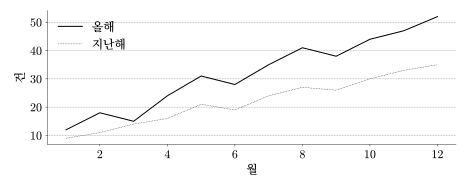

이 문서는 수리소 수학학원 문서 양식에 들어 있는 요소를 한 번씩 보여 준다. 판형은 A4 세로 595×842pt, 여백은 위 72pt, 좌우 60pt, 아래 88pt다. 본문 영역 높이는 682pt이고 이는 22pt 그리드로 정확히 31행에 떨어진다.
모든 글줄은 22pt 베이스라인 그리드 위에 놓인다. 문단 사이는 한 칸, 섹션 위는 한 칸 반, 섹션 아래는 반 칸을 둔다. 섹션은 중간에서 쪽이 끊기지 않으므로 아래쪽 여백이 크게 남을 수 있는데, 이는 의도한 결과다.
줄은 어절 단위로 바꾼다. 인쇄해서 읽는 문서라 한 어절이 두 줄에 걸치면 읽는 속도가 눈에 띄게 떨어지기 때문이다. 렌더러가 어절마다 줄 바꿈 금지
를 걸어 이를 지킨다.
날짜는 2026. 8. 6. 처럼 쓰고, 시각은 14:30 처럼 쓴다. 기간은 2026. 8. 6.~2026. 9. 5. 와 같이 물결표 앞뒤를 모두 붙인다.
통화는 120,000원으로 적는다. 단위는 숫자에 붙여 10건, 3개월, 50%로 쓴다. 숫자는 고정폭이라 0123456789와 1111111111의 폭이 같다.
| 구분 | 내용 | 수량 | 금액 |
|---|---|---|---|
| 가 | 첫 번째 항목 | 10건 | 120,000원 |
| 나 | 두 번째 항목 | 3건 | 36,000원 |
| 다 | 세 번째 항목 | 25건 | 300,000원 |
| 라 | 네 번째 항목 | 8건 | 96,000원 |
| 합계 | 46건 | 552,000원 |
표 1. 선은 가로만 0.4pt로 긋고 배경은 쓰지 않는다. 행 높이는 테두리를 포함해 22pt다.
수식은 별행으로 놓고 블록 높이를 22의 배수로 맞춘다. 수식 안에서는 줄을 바꾸지 않는다.
식 1. Computer Modern, 본문 배율 1.0.
그래프도 블록 높이를 22의 배수로 맞춘다. 축은 0.4pt, 그래프 선은 1pt, 점선은 0.4pt에 2pt 등간격이다.

그림 1. 월별 추이.
섹션은 중간에서 끊기지 않는다. 한 섹션이 남은 자리에 다 들어가지 않으면 통째로 다음 쪽으로 넘어가고, 넘어간 섹션은 윗여백선에서 정확히 시작해 그리드를 유지한다.
외톨이줄은 두지 않는다. 문단의 첫 줄이나 마지막 줄이 혼자 남으면 두 줄이 함께 넘어간다.
쪽번호는 하단 가운데, 종이 아래끝에서 44pt 위에 놓인다.